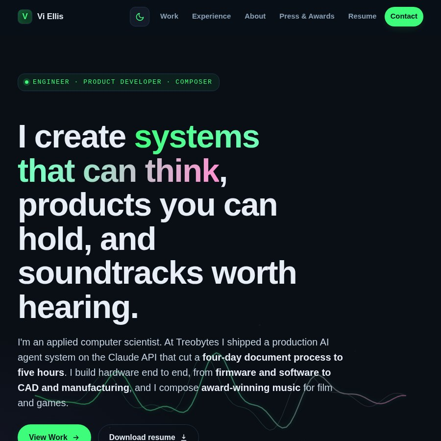
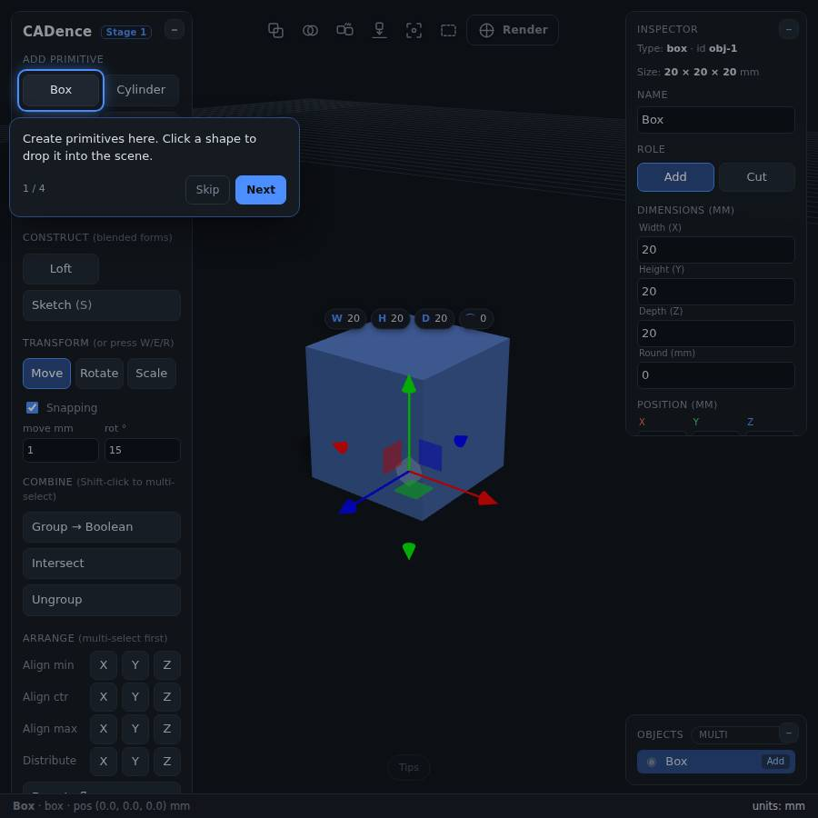
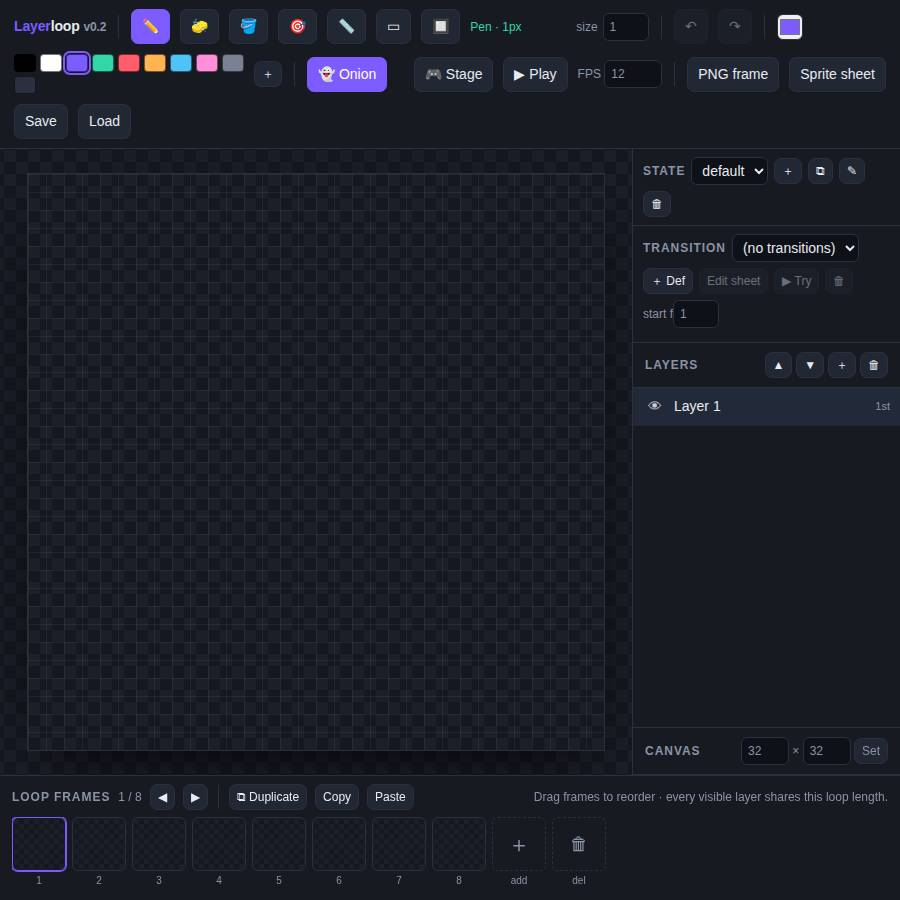
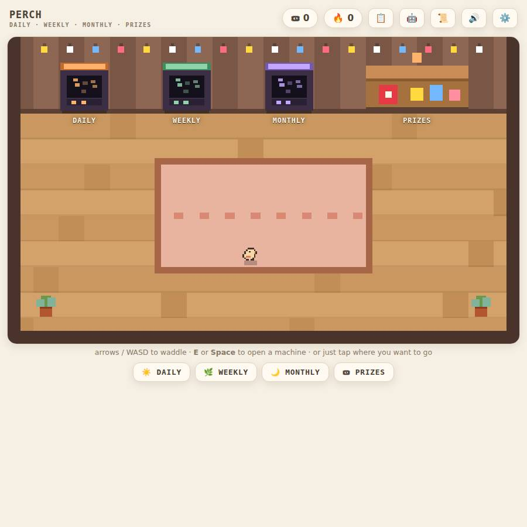
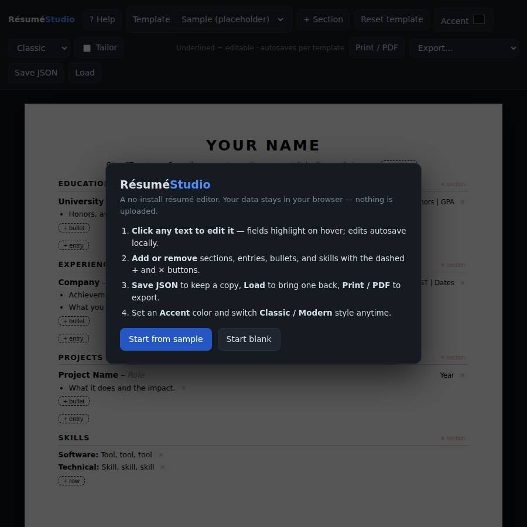
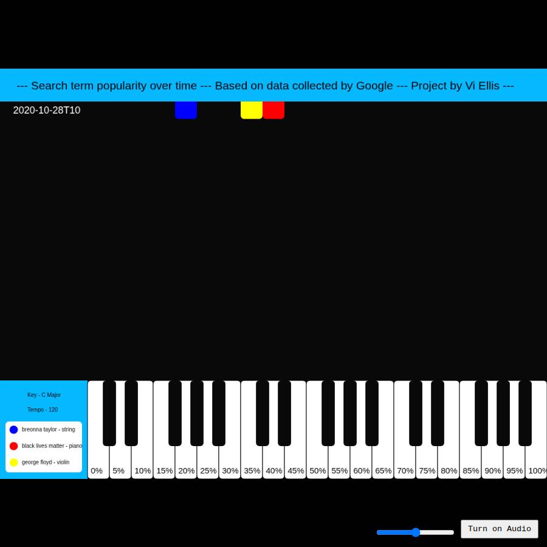
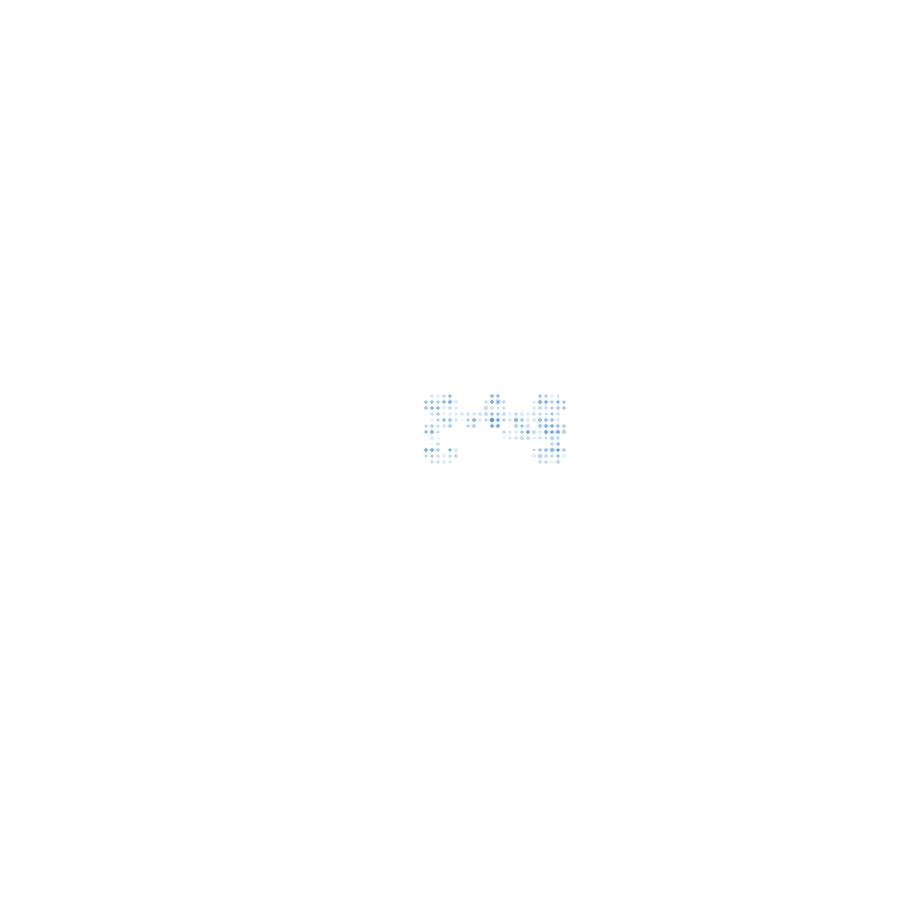
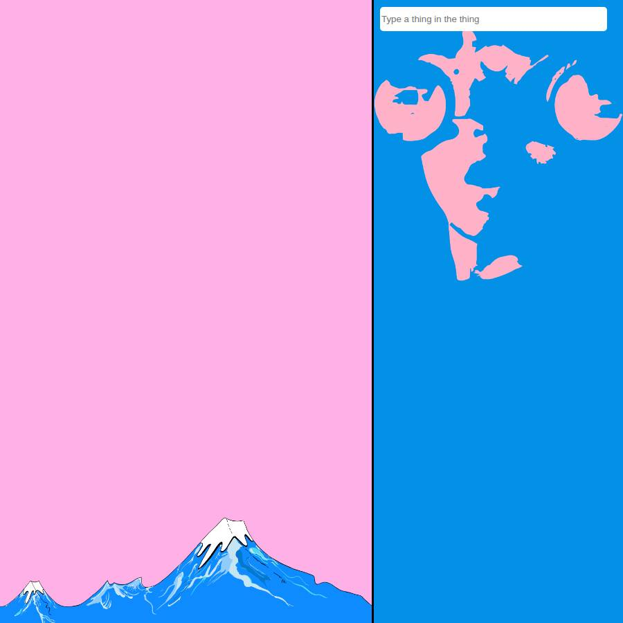
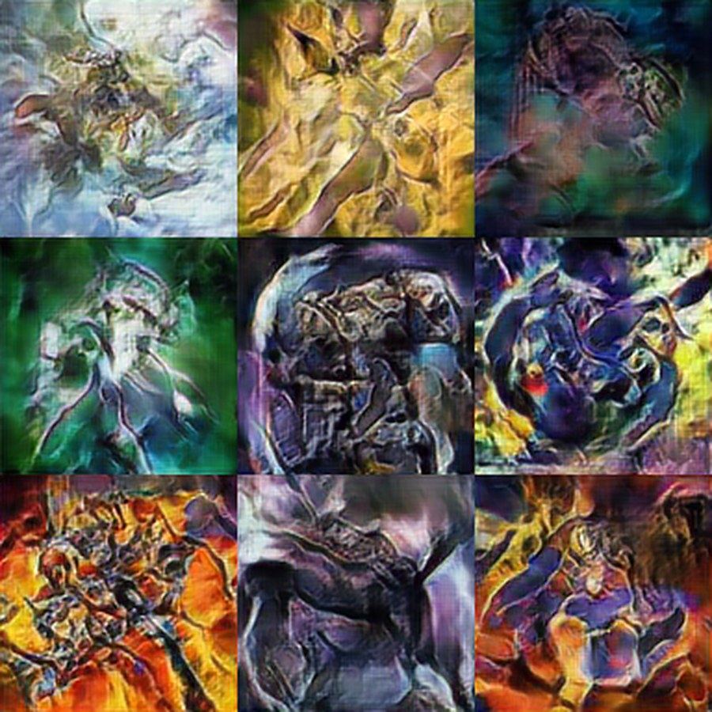
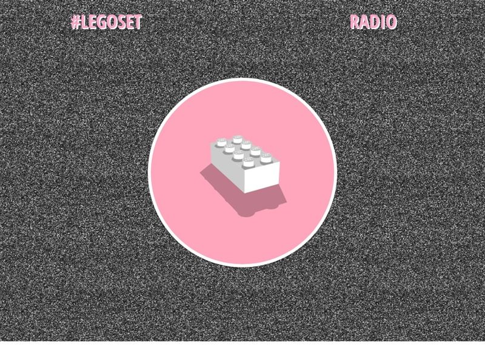

Vi Ellis
Engineer, product developer, and composer. Here's the work, and a few things you can actually play with.

Portfolio Start here
The full body of work, from production AI to hardware, audio, and teaching.
Enter the portfolio
CADence
A browser 3D modeler that makes precise CAD as approachable as a toy.
Launch it
Layerloop
Layered, stated pixel animation in the browser. Draw, loop, export.
Launch it
Perch
A cozy goal arcade. Waddle a little bird between machines, turn daily wins into tickets, and trade them for treats.
Launch it
Résumé Studio
A clean, ATS-friendly résumé editor that renders from structured content.
Launch it
Musically-Represented Data
Google Trends data performed as a glowing piano roll you can scrub and listen to.
Launch it
Primes
A meditative visualizer that draws the hidden shapes of prime numbers.
Launch it
Chatbot
A tiny retro chatbot from the p5.js era, preserved as it was.
Launch it
YGO GAN
A neural network I trained from scratch, generating trading-card art right in your browser.
Generate art
LEGOSET Collective
The archived site of a retired underground music label, my first web contract (2017), preserved page for page.
Browse the archive